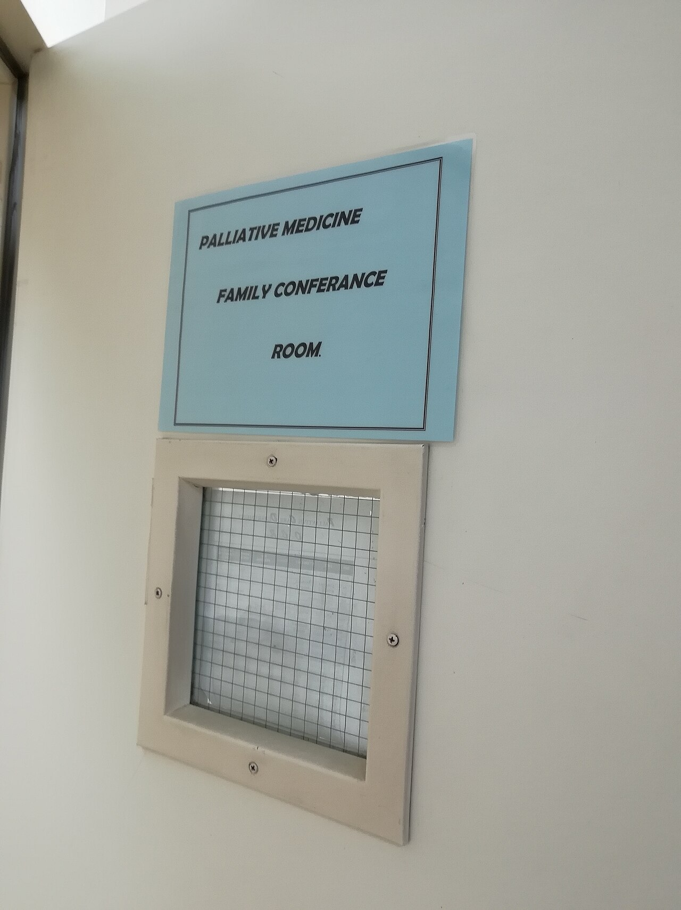

Social Institutions
Some patterns are so deep in a society that we barely notice they are patterns at all. Every society, no matter how it differs in language or landscape, builds up a set of durable arrangements to answer the same handful of unavoidable questions: How do we pass knowledge to the next generation? What do we hold sacred? How do we produce and distribute what we need? Who gets to give orders, and why do the rest of us obey? Who cares for us when our bodies fail? These arrangements — education, religion, the economy, government, and medicine — are the social institutions of this chapter, and learning to see them as human creations rather than facts of nature is one of the most powerful moves in all of sociology.
By the end of this chapter you can
- Define a social institution and explain why every society develops the same core institutions.
- Distinguish the manifest and latent functions of education and describe the hidden curriculum and tracking.
- Summarize Durkheim's theory of religion and contrast the ecclesia, church, sect, and cult, and explain secularization.
- Compare capitalism, socialism, and mixed economies, and describe how the world of work has changed.
- State Weber's three types of authority and distinguish power from legitimate authority.
- Explain the social construction of health, the concept of medicalization, and Parsons's sick role.
- Apply the functionalist, conflict, and symbolic-interactionist paradigms to each of these institutions.
Section 1Education
What schools are for
Education is the social institution through which a society transmits knowledge, skills, values, and norms to its members. In small pre-industrial societies this happened informally, at a parent's side; in modern societies it has been handed to a specialized, formal institution — the school — that most children are legally required to attend. Sociologists find it useful to separate a school's intended, openly acknowledged purposes from its unintended, unrecognized ones, a distinction Robert Merton gave us as manifest versus latent functions. The manifest functions of schooling are the obvious ones: teaching literacy and numeracy, training a workforce, and passing on the culture. The latent functions are the quieter by-products — schools supervise children while parents work, they bring young people together and become marriage markets and friendship networks, and they can incubate social change when students encounter ideas their parents never met.
A functionalist reads all of this approvingly: Émile Durkheim argued that schools are engines of socialization and social integration, teaching a shared moral culture that binds diverse individuals into one society. A conflict theorist is more suspicious, asking whose culture is being transmitted and who benefits — and answering, following Marx, that schools mostly reproduce the existing class order while calling it merit. A symbolic interactionist zooms all the way in to the classroom itself, to the daily face-to-face expectations between teacher and student that quietly shape who succeeds.
| Paradigm | What education really does | Key idea |
|---|---|---|
| Functionalist | Socializes the young, transmits culture, sorts talent, integrates society | Manifest & latent functions (Durkheim, Merton) |
| Conflict | Reproduces class inequality while disguising it as fair competition | Social reproduction, cultural capital (Marx, Bourdieu) |
| Symbolic interactionist | Labels students and turns teacher expectations into outcomes | Self-fulfilling prophecy, labeling |
The hidden curriculum
Alongside the official syllabus of math and history runs a second, unwritten one. The hidden curriculum is the set of lessons in norms, values, and dispositions that schools teach without ever announcing them: sit still, raise your hand, be punctual, wait your turn, compete for grades, respect the authority of whoever is at the front of the room. None of this appears on a report card, yet it may be the most consequential thing schooling does, because it trains children in exactly the habits an employer will later reward. Conflict theorists argue this is no accident. Schooling instills obedience and acceptance of hierarchy, so that when students become workers they slot into a stratified economy without protest — the hidden curriculum quietly manufactures consent to the way things are.
Tracking
Tracking (called streaming in many countries) is the practice of sorting students into different instructional groups — “honors” versus “remedial,” college-preparatory versus vocational — on the basis of measured ability. Defenders say it lets teaching meet each student where they are. Critics point out that placement correlates strongly with social class and race rather than raw talent, that lower tracks receive thinner curricula and lower expectations, and that a track assigned at age ten can harden into a life path. Because students tend to become what they are told they are, tracking often functions as a self-fulfilling prophecy, and it is one of the clearest mechanisms by which a system that promises mobility ends up reproducing the stratification it inherited.
- Education transmits knowledge and culture; its purposes split into manifest and latent functions (Merton).
- The hidden curriculum teaches punctuality, obedience, and competition — the dispositions the workforce rewards.
- Tracking sorts students by supposed ability but tends to reproduce class and race inequality.
- Teacher expectations can become self-fulfilling prophecies, shaping the very outcomes they predict.
Section 2Religion
Durkheim and the sacred
To a sociologist, religion is not a question of whether any god exists — that is a question for theology — but of what religion does in social life. Émile Durkheim built the classic answer in The Elementary Forms of Religious Life. Every religion, he observed, divides the world into two categories: the sacred (things set apart, forbidden, treated with awe — a cross, a river, a scripture) and the profane (the ordinary, everyday, mundane). What makes something sacred is not any property of the object itself but the collective attitude a community takes toward it. When believers gather to perform rituals around the sacred, Durkheim argued, they generate a shared emotional energy he called collective effervescence — and in that surge of belonging, the group is really experiencing the power of society itself. His startling conclusion: in worshipping the sacred, a society is, in a sense, worshipping itself, and religion's deepest function is to bind people into a moral community.
Durkheim's is a functionalist account, stressing cohesion, social control, and a sense of meaning and purpose. Other founders saw different things. Karl Marx, from the conflict tradition, called religion “the opium of the people” — a comfort that dulls the pain of exploitation and legitimates inequality by promising rewards in the next life rather than justice in this one. Max Weber, in The Protestant Ethic and the Spirit of Capitalism, argued the reverse of Marx: that religious ideas can drive economic change, tracing how a Calvinist ethic of disciplined, thrifty work helped midwife modern capitalism.
Types of religious organization
Religions organize themselves in recognizably different social forms, arranged here roughly from most to least integrated into the surrounding society. An ecclesia is a state religion to which nearly everyone in a society automatically belongs. A church (or denomination) is a large, well-established, respectable body that accommodates itself to the wider world and coexists with other faiths. A sect is a smaller, more fervent group that has broken away in protest, demanding stricter commitment and holding itself apart from a society it finds too worldly. A cult — scholars increasingly prefer the neutral term new religious movement — is a new, unconventional faith organized around novel beliefs or a charismatic founder, often at the margins of the mainstream.
| Form | Size & standing | Relationship to society |
|---|---|---|
| Ecclesia | Society-wide, official | Fused with the state; membership by birth |
| Church / denomination | Large, established, respectable | Accommodates the wider world; tolerates rivals |
| Sect | Smaller, intense, breakaway | Rejects and withdraws from mainstream society |
| Cult / new religious movement | Small, new, unconventional | Novel beliefs, often around a charismatic leader |
Secularization — and its limits
For much of the twentieth century, sociologists expected secularization — the long decline in the social influence of religion — to march steadily forward as societies modernized. In many wealthy nations, formal religious participation has indeed fallen, and institutions once governed by the church (schools, hospitals, courts, welfare) have passed into secular hands. Yet the confident prediction that religion would simply fade has not held up. Across much of the world religion is vigorous, and even in secularizing societies the picture is less decline than reorganization: the rise of fundamentalist movements reasserting tradition, and a “religious economy” view suggesting that where many faiths compete freely for members, religious energy can actually intensify rather than wither.
- Durkheim defined religion around the sacred vs the profane; ritual generates collective effervescence and binds society.
- Marx saw religion legitimating inequality (“opium”); Weber saw it driving change (the Protestant ethic).
- Religious organizations range across ecclesia, church/denomination, sect, and cult, and groups migrate between them.
- Secularization is real in some societies but uneven; religion persists, revives, and reorganizes.
Section 3The economy & work

Economic systems
The economy is the institution that organizes the production, distribution, and consumption of goods and services. Societies answer the basic economic questions — what to produce, how, and for whom — through different systems, and the two ideal types anchor a long argument. Under capitalism, the means of production are privately owned, goods are exchanged in a competitive market, and the engine is private profit; Adam Smith famously argued that individuals pursuing their own gain are led “as if by an invisible hand” to benefit society as a whole. Under socialism, the means of production are owned collectively (often through the state), and the economy is directed by central planning toward meeting collective need rather than private profit. Karl Marx supplied capitalism's sharpest critique: he argued that owners extract surplus value from workers — paying them less than the worth of what they produce — making exploitation the hidden motor of profit, and predicting that the resulting class conflict would eventually overturn the system.
In reality no large economy is purely one or the other. Nearly every modern society runs a mixed economy, combining private markets with public provision — regulation, taxation, and a welfare state that supplies education, pensions, and health care alongside the market.
| System | Who owns production | How resources are allocated | Primary goal |
|---|---|---|---|
| Capitalism | Private individuals & firms | Competitive markets, supply & demand | Private profit |
| Socialism | The community / the state | Central planning | Meeting collective need |
| Mixed economy | Both private and public | Markets plus regulation & a welfare state | Growth and social protection |
The changing world of work
The kind of work a society does has been transformed twice over. Most human history was spent in the primary sector — agriculture and extraction, drawing raw materials from the earth. The Industrial Revolution shifted the center of gravity to the secondary sector, manufacturing goods in factories like the one above. The wealthy societies of today have moved again, into a post-industrial or tertiary sector economy built on services, information, and knowledge — a transition the sociologist Daniel Bell named and analyzed. With that shift came deindustrialization (the loss of stable factory jobs to automation and to lower-wage countries) and the growth of a gig economy of short-term, app-mediated, contract work that offers flexibility but strips away the security, benefits, and predictability of the mid-century job.
Sociology insists that work is never merely a paycheck. Marx's concept of alienation captures what can go wrong: when workers have no ownership of what they make, no control over how they make it, and no connection to the final product, labor becomes estranged and hollow rather than fulfilling. Whether the next wave of automation and platform work deepens that alienation or relieves it is one of the defining questions of the contemporary economy.
- The economy organizes production and distribution; capitalism (private, market, profit) and socialism (collective, planned, need) are the ideal types.
- Marx located profit in surplus value extracted from workers; most societies are in fact mixed economies.
- Work has shifted from the primary to the secondary to the post-industrial / tertiary sector, bringing deindustrialization and the gig economy.
- Alienation describes labor stripped of ownership, control, and meaning.
Section 4Government & power
Power and its legitimacy
Max Weber gave sociology its working definition of power: the ability to achieve one's goals and impose one's will on others even against their resistance. Power comes in two very different flavors. Raw coercion — power backed only by force or the threat of it — is unstable and expensive, because people obey only as long as the gun is pointed at them. Far more durable is authority: power that people accept as legitimate and rightful, so that they obey willingly. The central puzzle of government is therefore not how rulers seize power but how they get the ruled to grant them authority — and Weber's answer was that legitimacy comes in three distinct types.
Weber's three types of authority
Traditional authority rests on long-established custom and the sanctity of “the way things have always been done.” A hereditary monarch or tribal chief commands obedience because their family always has; the legitimacy is inherited, not earned. Charismatic authority flows from the extraordinary personal qualities of an individual — a prophet, a revolutionary, a movement leader whose followers are devoted to the person themselves. It is the most volatile type, because it lives and dies with one human being; Weber described how a movement must accomplish the routinization of charisma, converting a founder's personal magnetism into stable offices and rules, or it dies with them. Rational-legal authority is vested not in persons but in a system of impersonal rules and offices: we obey the law and the officeholder, not the individual, and power passes peacefully when one officeholder replaces another. This is the characteristic authority of the modern state, and its natural home is bureaucracy.
| Type of authority | Source of legitimacy | Example | Weak point |
|---|---|---|---|
| Traditional | Custom, heredity, “always done this way” | Kings, queens, tribal chiefs | Struggles to justify change |
| Charismatic | Extraordinary qualities of one person | Prophets, revolutionaries, movement leaders | Dies with the leader unless routinized |
| Rational-legal | Impersonal rules, laws, and offices | Modern states, elected officials, bureaucracies | Can feel cold, rigid, dehumanizing |
Who really holds power?
Weber told us how authority is legitimated; sociologists still argue about where power actually concentrates. C. Wright Mills advanced the influential power elite thesis: that real power in a large society is held by a small, interlocking circle at the top of its political, economic, and military institutions, whose members share backgrounds and interests and make the decisions that matter — leaving ordinary democratic participation more limited than it appears. Against this, pluralists argue that power is dispersed among many competing interest groups, none able to dominate, so that outcomes emerge from bargaining. Which picture is closer to the truth remains a central question of political sociology.
- Power (Weber) is achieving one's will despite resistance; authority is power accepted as legitimate.
- Weber named three types of authority: traditional, charismatic, and rational-legal.
- Charisma must undergo routinization to survive its leader; the modern state rests on rational-legal authority and bureaucracy.
- C. Wright Mills's power elite thesis holds that a small interlocking group dominates; pluralists disagree.
Section 5Health & medicine

Health is more than biology
It is tempting to think of health and illness as purely biological facts, but sociologists study the social construction of health — the way a society decides what counts as sickness, who counts as sick, and how the sick should be treated. What a culture labels a disease varies dramatically across time and place: conditions once seen as sin, weakness, or spirit possession are now diagnoses, and behaviors once considered ordinary have been redefined as medical problems. That last process has a name: medicalization, the sociologist Peter Conrad's term for the trend of bringing more and more of life — childbirth, aging, shyness, sadness, restlessness, addiction — under the authority of medicine. Medicalization can help people by opening the door to treatment, but it also expands the reach of medical control over everyday life and turns social questions into individual clinical ones.
Sociologists also document that health itself is unequally distributed along social lines. There is a durable social gradient: the lower a person's social class, the worse their health and the shorter their life expectancy tend to be — a pattern that no amount of individual willpower explains and that points instead to the social causes of disease.
The sick role
The functionalist Talcott Parsons gave the classic account of what it means, socially, to be ill. Being sick, he argued, is not just a physical state but a temporary social role — the sick role — that comes with a bargain of rights and obligations. The sick person earns two rights: they are excused from their normal duties (a doctor's note releases you from work or class), and they are not held personally responsible for their condition. In exchange, they take on two obligations: they must genuinely want to get well and regard being sick as undesirable, and they must seek competent help — a physician — and cooperate with treatment. In this view, illness is a form of deviance that medicine is licensed to manage, which makes the medical profession an agent of social control, deciding who is legitimately excused and returning them to their duties.
The sick-role model has been sharply criticized. It fits an acute, curable illness like the flu but describes chronic and disabling conditions poorly, since those can never simply be “gotten over.” It assumes a cooperative doctor–patient relationship and glosses over the power imbalance within it, and it ignores how unequally people can access the medical help the model requires them to seek.
| Paradigm | How it views health & medicine | Key idea |
|---|---|---|
| Functionalist | Illness disrupts society; medicine restores people to their roles | The sick role; medicine as social control (Parsons) |
| Conflict | Health and care are distributed by power and profit; medicine expands its authority | Health inequality, medicalization critique |
| Symbolic interactionist | Illness meanings are socially constructed and negotiated; the sick can be stigmatized | Social construction of illness, stigma (Goffman) |
- The social construction of health means societies decide what counts as illness; medicalization expands medicine's reach over everyday life.
- Health follows a social gradient: lower class, worse health — disease has social causes.
- Parsons's sick role grants rights (excused, not blamed) in exchange for obligations (want to recover, seek and follow treatment).
- Medicine acts as an agent of social control; the sick-role model fits acute better than chronic illness.
The chapter in one breath
- Social institutions are the durable arrangements every society builds to meet shared needs — education, religion, the economy, government, and medicine.
- Education serves manifest and latent functions, teaches a hidden curriculum of obedience and competition, and tracks students in ways that reproduce inequality.
- Durkheim saw religion binding society through the sacred and collective ritual; organizations range from ecclesia to cult, and secularization is real but uneven.
- The economy runs on capitalism, socialism, or a mixed blend; work has moved from farm to factory to service, bringing the gig economy and alienation.
- Weber distinguished power from legitimate authority, which comes in traditional, charismatic, and rational-legal forms; Mills warned of a power elite.
- Health is socially constructed and medicalized; Parsons's sick role frames illness as a social role of rights and obligations, and medicine as social control.
- The functionalist, conflict, and symbolic-interactionist paradigms each throw a different light on every one of these institutions.
ReferenceWords worth knowing
A quick reference for the terms in this chapter — skim it now, or circle back whenever a word trips you up.
- Alienation
- Marx's term for the estrangement workers feel when they have no ownership of, control over, or connection to what they produce.
- Authority
- Power that people accept as legitimate and rightful, so that they obey willingly rather than by compulsion.
- Bureaucracy
- A large, formal organization run by impersonal rules and offices; the characteristic home of rational-legal authority.
- Capitalism
- An economic system based on private ownership of production, competitive markets, and the pursuit of profit.
- Charismatic authority
- Legitimacy grounded in the extraordinary personal qualities of an individual leader.
- Cult (new religious movement)
- A small, new, unconventional religious group, often organized around novel beliefs or a charismatic founder.
- Ecclesia
- A religion so dominant it is fused with the state, with membership essentially by birth.
- Gig economy
- A labor market of short-term, contract, and app-mediated work in place of stable, long-term employment.
- Hidden curriculum
- The unofficial lessons in norms and values — punctuality, obedience, competition — that schools teach without announcing them.
- Manifest & latent functions
- Merton's distinction between an institution's intended, recognized effects and its unintended, unrecognized ones.
- Medicalization
- The process by which non-medical aspects of life come to be defined and treated as medical conditions.
- Power
- Weber's term for the ability to achieve one's goals and impose one's will despite the resistance of others.
- Profane
- In Durkheim's scheme, the ordinary, everyday, mundane world, set against the sacred.
- Rational-legal authority
- Legitimacy vested in impersonal rules, laws, and offices rather than in persons; the basis of the modern state.
- Sacred
- Things a community sets apart and treats with awe or reverence; for Durkheim, the core of religion.
- Sect
- A smaller, more fervent religious group that has broken away from an established church and rejects the wider society.
- Secularization
- The long-term decline in the social influence and authority of religion, uneven across societies.
- Sick role
- Parsons's concept of illness as a temporary social role carrying rights (excused, not blamed) and obligations (seek help, want to recover).
- Social institution
- A durable, patterned set of arrangements through which a society meets a basic recurring need.
- Socialism
- An economic system based on collective or state ownership of production and planning to meet social need.
- Tracking
- Sorting students into different instructional groups by measured ability, often reproducing existing inequality.
- Traditional authority
- Legitimacy grounded in long-standing custom and heredity, as with a monarch or chief.